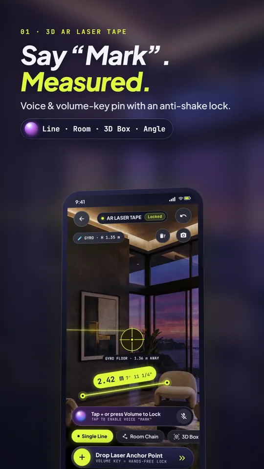
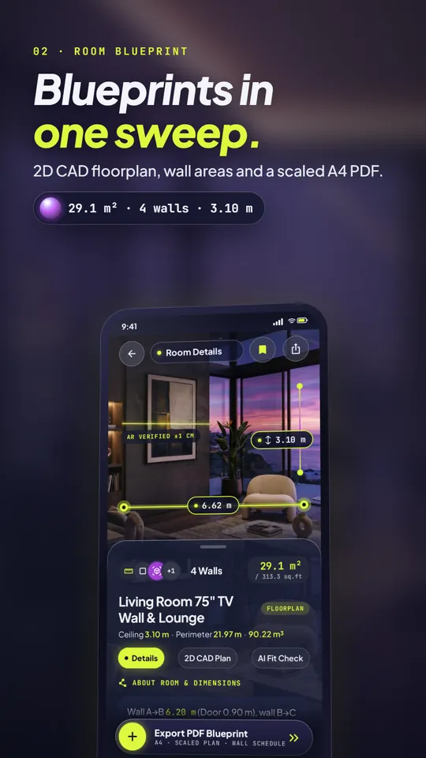
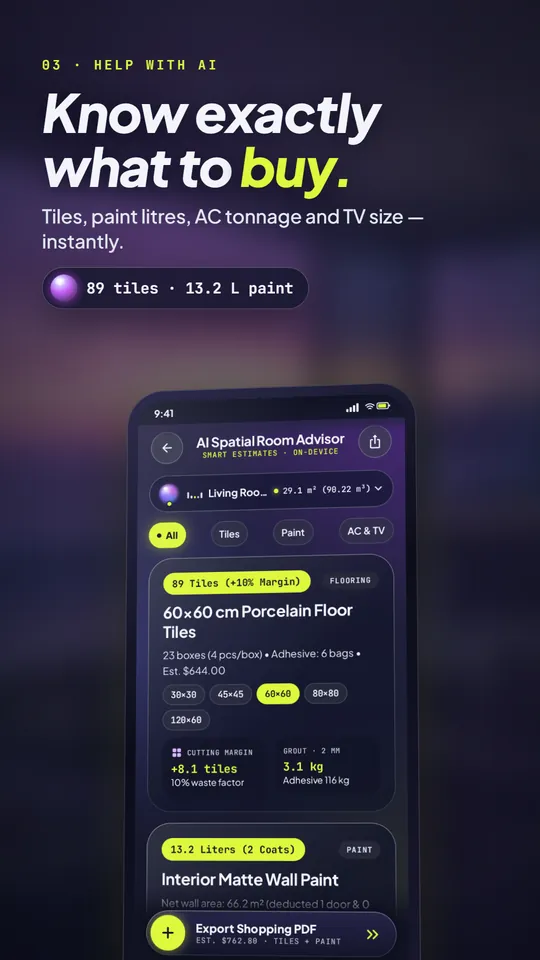
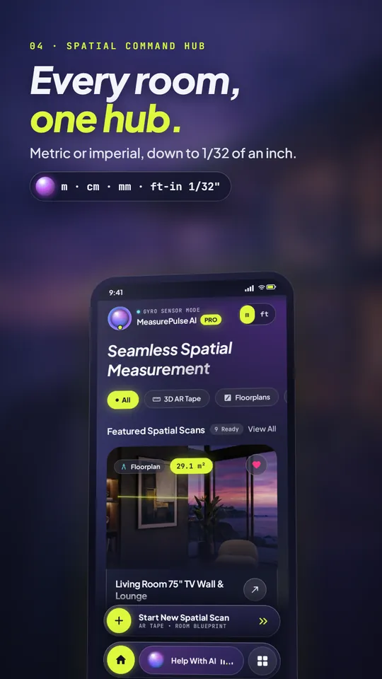
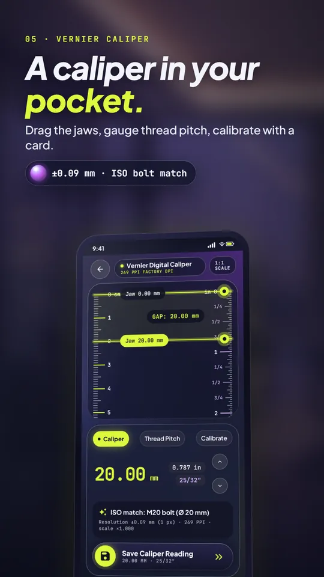
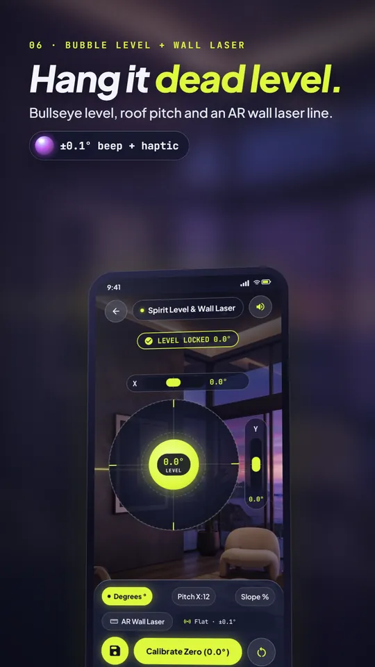
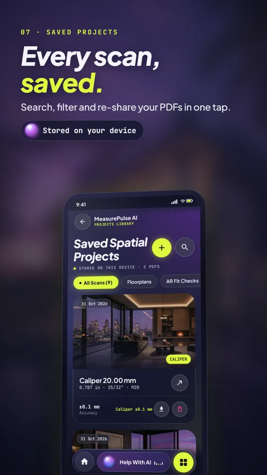
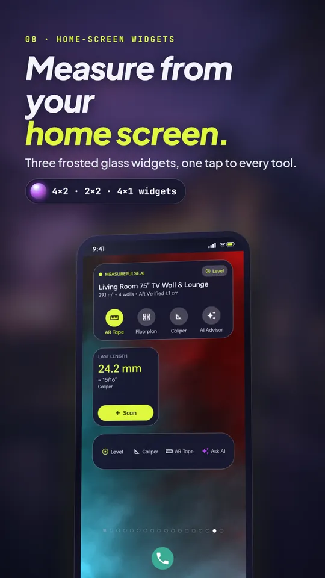

MeasurePulse AI turns your Android phone into an AR laser tape, a 3D room floor plan creator, a camera height & distance rangefinder, a digital vernier caliper and a bubble level. Point, say “Mark”, and export a scaled PDF blueprint.
2.42 m · 7′ 11¼″24.8 m² floor plan0.1 mm caliper±0.1° levelWorks without ARCore
18-second preview: AR laser tape, room blueprint, AI advisor, caliper, level & widgets.
Seven tools, one app
The measuring kit in your pocket
Every measurement is shown in metric and imperial, including fractional inches down to 1/32″. Switch units at any time.
AR tape measure app for Android
A 3D laser tape that measures lengths, room chains, angles and 3D boxes. Pin points hands-free by saying “Mark” or pressing a volume key; anti-shake locks the reading from just before the press.
ARCore depth + planes · sensor mode on every phone
3D room floor plan creator
Walk the room corner by corner and get an editable CAD floor plan with area, perimeter, volume and net wall area. Add doors and windows, square up corners, and export a scaled A4 PDF blueprint.
m² / sq ft · m³ / cu ft · 1:20 – 1:500 PDF
Furniture fit check
Drop a 3D box the size of a sofa, bed or TV into the room and see the clearance before you buy.
Fits · +14 cm clearance
Camera height & distance rangefinder
Estimate the height of a building, tree or wall and the distance to it with the camera and tilt sensors, using a reference of known height or your own eye height.
Height · distance · ML Kit object brackets
Digital vernier caliper (mm / inch)
An on-screen caliper calibrated with any bank card, plus a thread pitch gauge that suggests matching ISO metric bolts and hex sizes.
0.1 mm resolution · M3 – M24 thread gauge
Bubble level & clinometer app
A 2D bullseye spirit level with a beep and vibration at true level, slope in degrees, % and X:12 pitch, and an AR wall laser line for hanging frames and shelves.
±0.1° indicator · zero calibration
“Help With AI” room advisor
From your measured room: how many floor tiles, litres of paint, AC tonnage / BTU and the right TV size, with a shareable shopping-list PDF. Rule-based estimates, clearly labelled.
76 tiles · 14.5 L paint · 1.5 Ton AC · 65″ TV
Frosted glass home-screen widgets
Three widgets put your last room, last caliper length and one-tap tool shortcuts on the home screen.
4×2 hub · 2×2 converter · 4×1 dock
Screenshots
Designed like a pro instrument

AR laser tape

Room blueprint

AI room advisor

Spatial hub

Vernier caliper

Level & wall laser

Projects gallery

Home-screen widgets
Honest numbers
How accurate is a phone tape measure?
Phone measuring depends on the sensors in your device and on good light and texture. Here is what to expect, so you know when to reach for a real tape.
Tool
Typical result
Best for
AR laser tape (ARCore phones)
about ±1 cm at 1–3 m
Rooms, furniture, quick quotes
Sensor mode (no ARCore)
a few % of distance
Floor distances when ARCore isn’t available; set your camera height first
Height & distance rangefinder
estimate
Buildings, trees and walls you can’t reach
Vernier caliper
0.1 mm resolution
Screws, bolts, pipes and small parts after card calibration
Bubble level
±0.1° indicator
Shelves, frames and slopes after zero calibration
Why MeasurePulse AI
A Smart Measure alternative that does the whole room
Simple measuring apps give you one line at a time. MeasurePulse AI keeps going: the measured room becomes a floor plan, the plan becomes a PDF blueprint and a materials estimate, and the readings stay organised in a projects gallery.
Private by design
Camera frames, ARCore depth data and the “Mark” voice keyword are processed only in your phone’s memory. They are never recorded, stored or uploaded. Your rooms are saved only on your device.
Unlimited instant PDF blueprints and shopping lists
One-time purchase through Google Play, no subscription
Restore on a new phone with the same Google account
Price shown in USD; Google Play shows the price in your local currency.
FAQ
Questions people ask
Does the AR tape measure work on phones without ARCore?
Yes. On phones without Google Play Services for AR, MeasurePulse AI switches to Sensor Mode, which uses the gyroscope and your camera height to measure along the floor. All other tools work on any Android 8.0+ phone.
How do I make a floor plan of a room?
Open the AR tape, choose Room Chain, and mark each corner. Tap Finish to open the blueprint editor, where you can adjust walls, add doors and windows, and export a scaled A4 PDF.
Can I measure height with my phone camera?
Yes. The rangefinder estimates height and distance from the camera angle and either a reference of known height (like a door or a person) or your eye height. Treat results as estimates.
Is the caliper accurate in mm and inches?
After calibrating with a bank card, the on-screen caliper reads to 0.1 mm and shows fractional inches. It is ideal for small parts that fit on the screen.
Does the app record my camera or voice?
No. Camera frames, depth data and the “Mark” keyword are processed only on the device and never recorded or uploaded. The voice keyword uses Android’s on-device speech recognizer; phones without one use a local sound trigger instead.
What does Pro include?
A one-time $2.99 purchase removes all ads and unlocks instant PDF blueprints and shopping lists. There is no subscription.